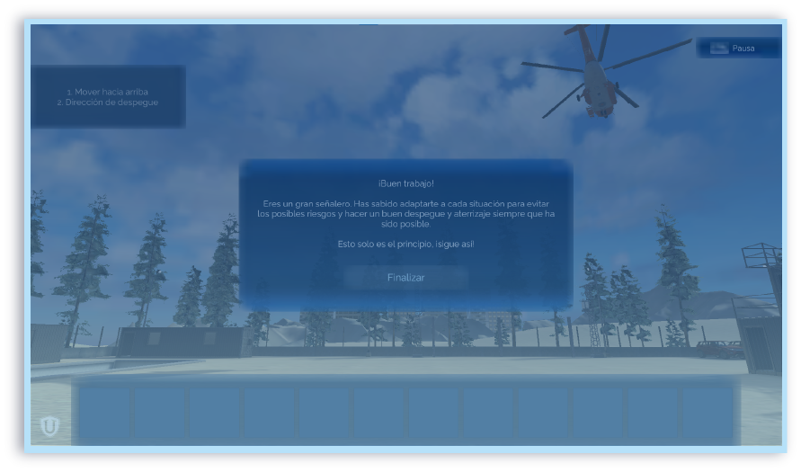

Señalizacion a helicoptero desde tierra
Se deben usar gestos amplios y repetitivos con ambos brazos para indicar la necesidad de ayuda (\(Y\)),
mientras que para indicar que no se necesita ayuda (\(N\)) se deben realizar gestos claros con un brazo levantado.


